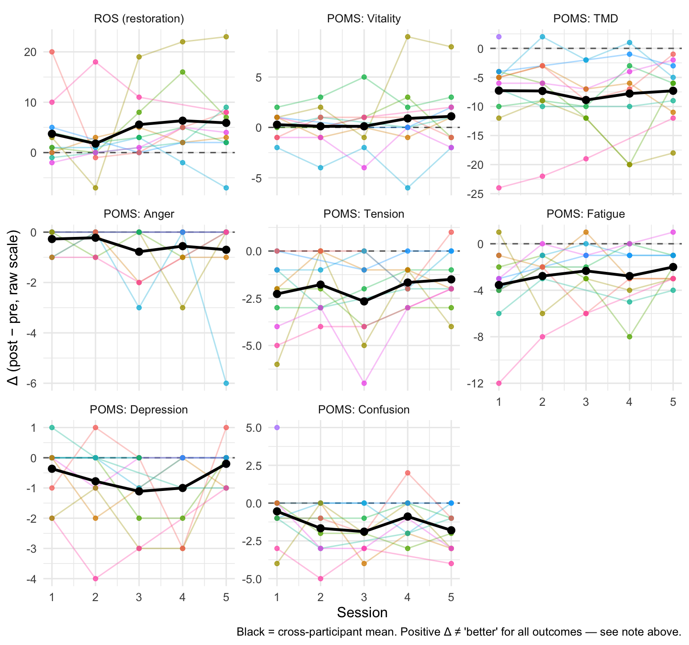
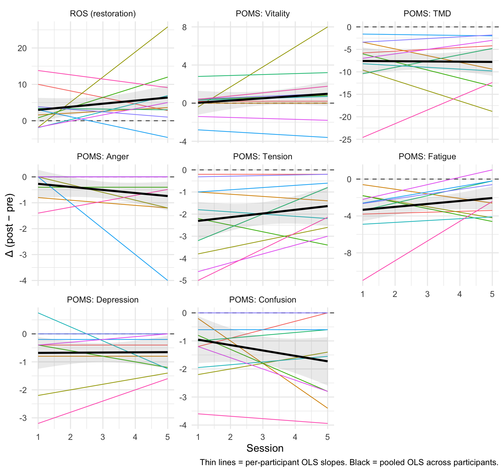
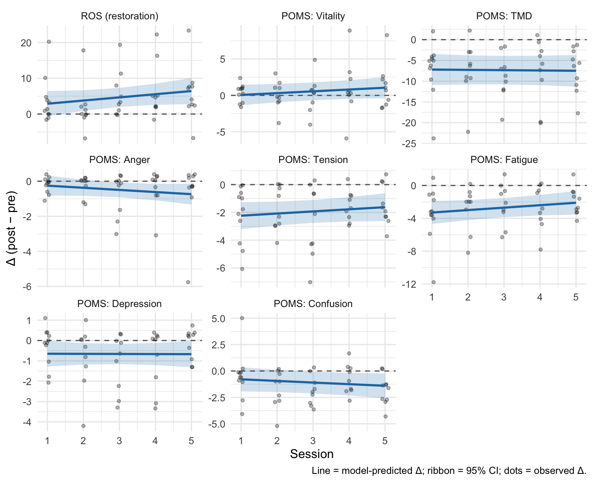
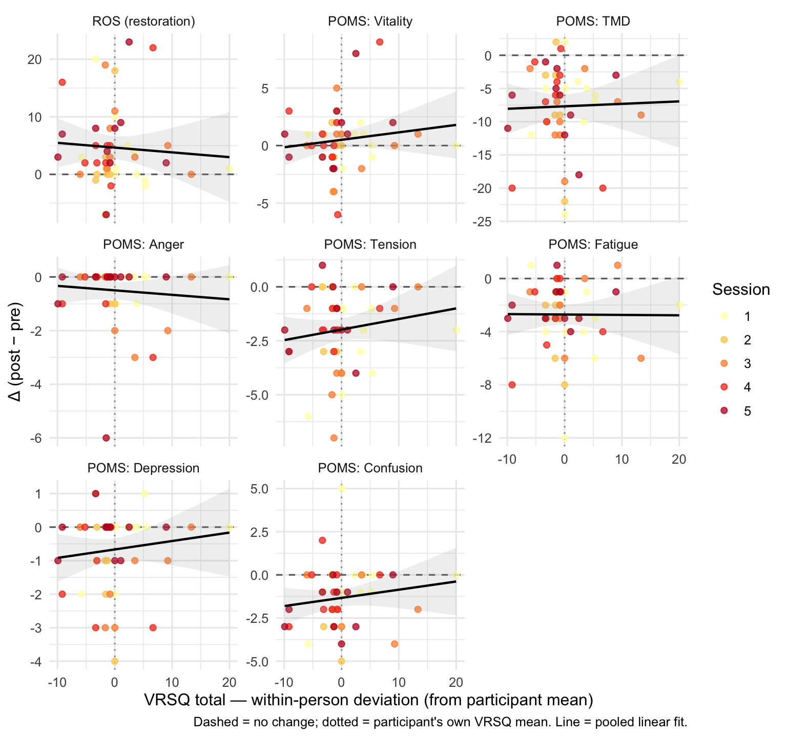
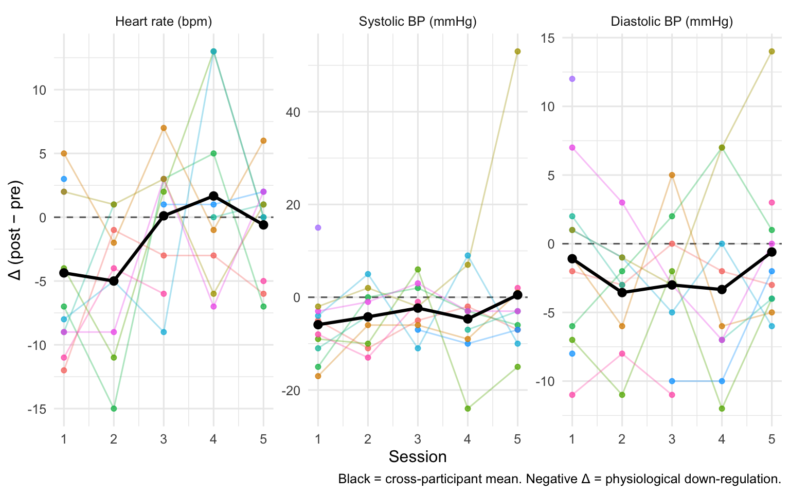
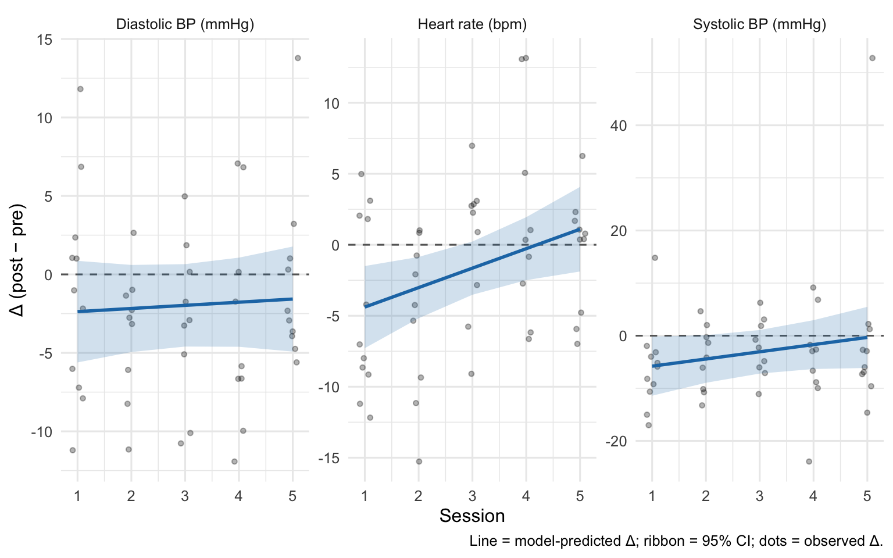

| Outcome | S1 | S2 | S3 | S4 | S5 |
|---|---|---|---|---|---|
| ROS | 11 | 9 | 9 | 9 | 10 |
| vitality | 11 | 9 | 9 | 9 | 10 |
| tmd | 11 | 9 | 9 | 9 | 10 |
| anger | 11 | 9 | 9 | 9 | 10 |
| tension | 11 | 9 | 9 | 9 | 10 |
| fatigue | 11 | 9 | 9 | 9 | 10 |
| depression | 11 | 9 | 9 | 9 | 10 |
| confusion | 11 | 9 | 9 | 9 | 10 |
Analysis
Does the benefit of VR forest immersion persist across repeated sessions?
Question and strategy
Participants did five 10-minute VR-forest sessions. We collected:
- ROS (Restoration Outcome Scale) and POMS-SF (6 subscales + total mood disturbance) — pre and post each session
- VRSQ (Virtual Reality Sickness Questionnaire; oculomotor and disorientation subscales) — post each session
- Physiological measures (heart rate, systolic and diastolic blood pressure) — pre and post each session
Our main interest is how the within-session benefit evolves across sessions 1 → 5. Does the effect of immersion persist, grow, or fade with repeated exposure? And is the size of the benefit on a given session shrunk when the same participant reports more VR sickness that day?
Primary outcome per session: Δ = post − pre (ROS; each POMS subscale; POMS TMD).
Three families of mixed-effects models (lmerTest::lmer):
- Trajectory —
Δ ~ session_c + (1 | participant). The fixed slope onsessiontells us how the benefit evolves; the intercept tells us the overall benefit averaged across sessions. - Pre × session interaction —
score ~ timepoint * session_c + (1 + timepoint | participant). Thetimepoint:sessionterm is the same “benefit evolution” test in the raw (pre, post) space. Thetimepointmain effect is the overall pre→post change averaged across sessions. - VRSQ moderation —
Δ ~ session_c * vrsq_wc + vrsq_pm + (1 | participant). VRSQ is split into a within-person component (_wc, deviation from the participant’s own mean) and a between-person component (_pm, participant’s average). The within-person slope answers: on your sicker-than-usual sessions, do you get less benefit? — which is the moderation question a between-person correlation would conflate.
Centering: session_c = session_order − 1, so the model intercept corresponds to session 1. Reported as “Session-1 Δ” in the tables below.
Random-effects structure: We use random intercepts only for Models 1 and 3. With n = 11 participants, random slopes on session are underpowered — they were producing singular fits in earlier specifications, meaning the slope variance collapsed to zero and the term was not identifiable. Individual trajectory heterogeneity is shown descriptively in the spaghetti-plot + individual-OLS-slopes diagnostic below rather than asked of the model. Model 2 keeps a random slope on timepoint because it’s estimated from 10 observations per participant (pre+post across 5 sessions), which is enough.
All effect sizes reported with 95% CIs. Small sample ⇒ we prefer CIs over p-values.
Direction of “improvement”
To make cross-outcome plots comparable, we define improvement as Δ signed so that positive = better: ROS and vitality use +Δ; anger, tension, fatigue, depression, confusion and TMD use −Δ. Model tables below use the raw Δ (not re-signed) so coefficients correspond to the scales as scored. The interpretation of a negative slope therefore differs by outcome — see each table’s footnote.
Data available for analysis
Descriptives: benefit trajectories
Each line is one participant’s Δ across the five sessions; the heavy black line is the cross-participant mean at each session. A flat black line suggests the benefit is stable; a downward slope suggests fading.

| Outcome | S1 | S2 | S3 | S4 | S5 |
|---|---|---|---|---|---|
| ROS | 3.73 (6.36) | 1.78 (6.70) | 5.56 (6.25) | 6.33 (7.66) | 5.90 (7.61) |
| vitality | 0.27 (1.19) | 0.11 (2.03) | 0.11 (2.47) | 0.89 (3.95) | 1.10 (3.00) |
| tmd | -7.27 (6.59) | -7.33 (6.67) | -8.89 (5.30) | -7.78 (7.64) | -7.30 (5.25) |
| anger | -0.27 (0.47) | -0.22 (0.44) | -0.78 (1.20) | -0.56 (1.01) | -0.70 (1.89) |
| tension | -2.27 (2.00) | -1.78 (1.56) | -2.67 (2.45) | -1.67 (1.00) | -1.50 (1.51) |
| fatigue | -3.55 (3.39) | -2.78 (2.59) | -2.33 (2.45) | -2.78 (2.64) | -2.00 (1.49) |
| depression | -0.36 (0.92) | -0.78 (1.48) | -1.11 (1.27) | -1.00 (1.32) | -0.20 (0.63) |
| confusion | -0.55 (2.25) | -1.67 (1.73) | -1.89 (1.36) | -0.89 (1.54) | -1.80 (1.40) |
Diagnostic: how much do participants’ trajectories differ?
Each thin line is one participant’s individual OLS fit of Δ on session; the bold black line is the across-participant mean. This is a descriptive substitute for a random-slope model — it lets you see how much trajectory heterogeneity exists without asking a mixed model to estimate it from 12 slopes.

Model 1 — Trajectory of the benefit
Δ ~ session_c + (1 | participant), fit per outcome, with session_c = session − 1. Two terms of interest:
- Intercept — estimated Δ at session 1. A CI that excludes zero (in the improvement direction) is evidence that the intervention works from the very first session.
- Slope on
session_c— change in Δ per additional session. Positive values = benefit is growing; negative = fading; near-zero = stable. Interpret the sign relative to the outcome’s direction (see footnote).
| Outcome | Session-1 Δ | Session-1 95% CI | Slope (per session) | Slope 95% CI | Slope p |
|---|---|---|---|---|---|
| ROS | +2.89 | [-0.71, +6.49] | +0.89 | [-0.33, +2.10] | 0.150 |
| vitality | +0.06 | [-1.40, +1.53] | +0.25 | [-0.13, +0.62] | 0.187 |
| tmd | -7.20 | [-11.20, -3.20] | -0.07 | [-0.85, +0.71] | 0.851 |
| anger | -0.25 | [-0.83, +0.33] | -0.12 | [-0.32, +0.08] | 0.231 |
| tension | -2.24 | [-3.24, -1.23] | +0.15 | [-0.12, +0.42] | 0.256 |
| fatigue | -3.29 | [-4.75, -1.84] | +0.30 | [-0.11, +0.71] | 0.148 |
| depression | -0.65 | [-1.29, -0.01] | -0.01 | [-0.20, +0.19] | 0.959 |
| confusion | -0.79 | [-2.06, +0.49] | -0.15 | [-0.42, +0.11] | 0.248 |

Model 2 — Pre × Session interaction
Same question, different parameterisation. We fit score ~ timepoint * session_c + (1 + timepoint | participant) on the long (pre, post) data, per outcome. With session_c = session − 1, two terms are of interest:
timepointpostmain effect — the pre → post change at session 1. This is the session-1 intervention effect on the raw scale, equivalent to Model 1’s intercept.timepointpost:session_cinteraction — whether the pre→post gap widens or shrinks across sessions (equivalent to Model 1’s slope).
The random slope on timepoint is retained here because it’s estimated from 10 observations per participant (pre + post across 5 sessions), enough to identify individual responsiveness.
| Outcome | Overall pre→post | Session-1 95% CI | Overall p | timepoint × session | Interaction 95% CI | Interaction p | Random effects |
|---|---|---|---|---|---|---|---|
| ROS | +3.19 | [-0.47, +6.85] | 0.085 | +0.78 | [-0.48, +2.05] | 0.221 | intercept + timepoint slope |
| vitality | +0.05 | [-1.76, +1.87] | 0.953 | +0.26 | [-0.39, +0.91] | 0.429 | intercept + timepoint slope |
| tmd | -7.50 | [-11.88, -3.12] | 0.002 | -0.17 | [-1.66, +1.31] | 0.817 | intercept + timepoint slope |
| anger | -0.27 | [-0.94, +0.40] | 0.427 | -0.12 | [-0.39, +0.16] | 0.397 | intercept-only (timepoint slope singular) |
| tension | -2.24 | [-3.27, -1.20] | 0.000 | +0.15 | [-0.15, +0.44] | 0.319 | intercept + timepoint slope |
| fatigue | -3.38 | [-4.98, -1.78] | 0.000 | +0.28 | [-0.29, +0.85] | 0.331 | intercept + timepoint slope |
| depression | -0.68 | [-1.70, +0.34] | 0.187 | +0.01 | [-0.41, +0.42] | 0.975 | intercept-only (timepoint slope singular) |
| confusion | -0.82 | [-2.06, +0.42] | 0.170 | -0.16 | [-0.47, +0.14] | 0.284 | intercept + timepoint slope |
Model 3 — VRSQ as a moderator
Does a session with more VR-sickness erase the benefit that session? We use the within-person VRSQ deviation (vrsq_*_wc: how much sicker or less sick than your own average you were that session) as the moderator, with the between-person average (vrsq_*_pm) included as a nuisance control so we don’t conflate the two.
Primary moderator: VRSQ total. We fit Δ ~ session_c * vrsq_total_wc + vrsq_total_pm + (1 | participant), per outcome. Reported terms:
- Intercept — estimated Δ at session 1, for a participant at their own average VRSQ. With the between-person control in the model, this is the session-1 intervention effect net of sickness.
- within-person VRSQ — average shrinkage (or enhancement) of Δ per unit of VRSQ deviation from your own mean, pooled across sessions.
- session × within-person VRSQ — whether that sickness-related shrinkage itself grows or fades with repeated exposures.
| Outcome | Moderator | Session-1 Δ | Session-1 95% CI | Within-person VRSQ | VRSQ 95% CI | Session × VRSQ | Interaction 95% CI |
|---|---|---|---|---|---|---|---|
| ROS | VRSQ total | +3.22 | [-2.77, +9.21] | -0.208 | [-0.772, +0.356] | +0.106 | [-0.146, +0.357] |
| vitality | VRSQ total | +0.08 | [-2.56, +2.72] | +0.019 | [-0.150, +0.188] | +0.039 | [-0.037, +0.116] |
| tmd | VRSQ total | -8.27 | [-15.93, -0.62] | +0.139 | [-0.230, +0.507] | -0.059 | [-0.227, +0.108] |
| anger | VRSQ total | -0.00 | [-0.94, +0.94] | -0.012 | [-0.105, +0.080] | -0.008 | [-0.049, +0.033] |
| tension | VRSQ total | -2.58 | [-4.42, -0.75] | +0.068 | [-0.055, +0.191] | -0.002 | [-0.058, +0.053] |
| fatigue | VRSQ total | -4.02 | [-6.58, -1.45] | -0.061 | [-0.251, +0.129] | +0.045 | [-0.040, +0.131] |
| depression | VRSQ total | -0.61 | [-1.71, +0.50] | +0.068 | [-0.023, +0.159] | -0.024 | [-0.065, +0.017] |
| confusion | VRSQ total | -0.97 | [-3.62, +1.69] | +0.100 | [-0.019, +0.219] | -0.034 | [-0.088, +0.020] |
| ROS | VRSQ oculomotor | +1.01 | [-5.61, +7.63] | -0.219 | [-0.668, +0.231] | +0.134 | [-0.055, +0.323] |
| vitality | VRSQ oculomotor | -0.67 | [-3.82, +2.48] | +0.033 | [-0.105, +0.171] | +0.019 | [-0.040, +0.078] |
| tmd | VRSQ oculomotor | -5.17 | [-14.37, +4.02] | -0.042 | [-0.349, +0.264] | +0.004 | [-0.128, +0.136] |
| anger | VRSQ oculomotor | -0.20 | [-1.34, +0.94] | -0.041 | [-0.116, +0.034] | +0.013 | [-0.019, +0.045] |
| tension | VRSQ oculomotor | -2.15 | [-4.35, +0.05] | +0.077 | [-0.022, +0.177] | -0.016 | [-0.059, +0.027] |
| fatigue | VRSQ oculomotor | -3.01 | [-6.30, +0.29] | -0.135 | [-0.285, +0.016] | +0.059 | [-0.006, +0.123] |
| depression | VRSQ oculomotor | -0.32 | [-1.58, +0.95] | +0.055 | [-0.020, +0.129] | -0.021 | [-0.052, +0.011] |
| confusion | VRSQ oculomotor | -0.26 | [-3.34, +2.82] | +0.056 | [-0.045, +0.157] | -0.022 | [-0.065, +0.021] |
| ROS | VRSQ disorientation | +3.98 | [-0.37, +8.32] | -0.058 | [-0.483, +0.366] | -0.065 | [-0.300, +0.169] |
| vitality | VRSQ disorientation | +0.41 | [-1.50, +2.32] | -0.013 | [-0.145, +0.119] | +0.028 | [-0.047, +0.103] |
| tmd | VRSQ disorientation | -8.82 | [-14.15, -3.50] | +0.194 | [-0.075, +0.463] | -0.061 | [-0.215, +0.093] |
| anger | VRSQ disorientation | -0.10 | [-0.75, +0.56] | +0.022 | [-0.046, +0.090] | -0.035 | [-0.073, +0.002] |
| tension | VRSQ disorientation | -2.51 | [-3.78, -1.24] | +0.006 | [-0.089, +0.102] | +0.018 | [-0.036, +0.072] |
| fatigue | VRSQ disorientation | -3.90 | [-5.69, -2.10] | +0.041 | [-0.101, +0.183] | +0.020 | [-0.060, +0.100] |
| depression | VRSQ disorientation | -0.75 | [-1.59, +0.08] | +0.030 | [-0.039, +0.100] | -0.007 | [-0.046, +0.032] |
| confusion | VRSQ disorientation | -1.15 | [-2.96, +0.66] | +0.064 | [-0.026, +0.154] | -0.014 | [-0.065, +0.037] |
Visualising the primary moderation
For each outcome we plot Δ against the within-person VRSQ total, with a linear fit pooled across sessions. A downward slope in the positive-direction outcomes (ROS, vitality) or an upward slope in negative-direction outcomes would indicate that VR-sickness attenuates the benefit.

Physiological measures
Heart rate and blood pressure (systolic and diastolic) were recorded immediately before and after each session. The primary question is the same as for the psychological outcomes: does the intervention produce a reliable within-session drop, and does that effect change across the five sessions?
Outcomes: Δ heart rate (bpm), Δ systolic BP (mmHg), Δ diastolic BP (mmHg), where Δ = post − pre. Negative values indicate a drop (i.e. physiological down-regulation), which is the expected direction for a restorative intervention.
| Measure | S1 | S2 | S3 | S4 | S5 |
|---|---|---|---|---|---|
| Heart rate (bpm) | -4.36 (6.23) | -5.00 (5.59) | 0.11 (5.09) | 1.67 (7.37) | -0.60 (4.12) |
| Systolic BP (mmHg) | -5.91 (8.43) | -4.22 (6.24) | -2.33 (5.43) | -4.67 (9.76) | 0.50 (19.12) |
| Diastolic BP (mmHg) | -1.09 (6.79) | -3.56 (4.19) | -3.00 (5.20) | -3.33 (6.89) | -0.60 (5.85) |

Model — Trajectory of physiological benefit
Δ ~ session_c + (1 | participant), fit per physiological outcome with session_c = session − 1.
- Intercept — estimated Δ at session 1. A CI below zero is evidence of a reliable reduction from the first session.
- Slope on
session_c— change in Δ per additional session. Near-zero = stable effect; positive = effect is attenuating (less reduction in later sessions).
| Measure | Session-1 Δ | Session-1 95% CI | Slope (per session) | Slope 95% CI | Slope p |
|---|---|---|---|---|---|
| Heart rate (bpm) | -4.39 | [-7.30, -1.48] | +1.37 | [+0.24, +2.51] | 0.019 |
| Systolic BP (mmHg) | -5.79 | [-11.52, -0.07] | +1.37 | [-0.61, +3.35] | 0.170 |
| Diastolic BP (mmHg) | -2.37 | [-5.77, +1.02] | +0.20 | [-0.80, +1.20] | 0.687 |

Interpretation checklist
When reading the tables above:
- Does the intervention work at session 1? — look at the Session-1 Δ / Overall pre→post column in Models 1, 2, 3. A CI that excludes zero in the improvement direction (positive for ROS and vitality; negative for the negative-affect scales and TMD) is evidence of an intervention effect at the first session.
- Stability of benefit (Models 1 & 2): if the
sessionslope /timepoint × sessionterm has a CI that comfortably straddles zero, the benefit is not detectably changing across the 5 sessions — i.e. immersion is still working by session 5. If the CI is on the “fading” side of zero, that’s evidence of habituation. - Moderation (Model 3): if
within-person VRSQhas a CI that excludes zero, cybersickness is attenuating the benefit within person. Ifsession × within-person VRSQis non-zero, the attenuation itself grows/shrinks with repeated exposures. - Physiological outcomes: a negative Session-1 Δ for heart rate, systolic, or diastolic BP indicates down-regulation was already present at the first session. A positive slope would indicate the effect is attenuating across sessions.
- Small-sample caveat: with n = 11, CIs are wide. Treat results as exploratory; effect sizes and direction matter more than p-values.